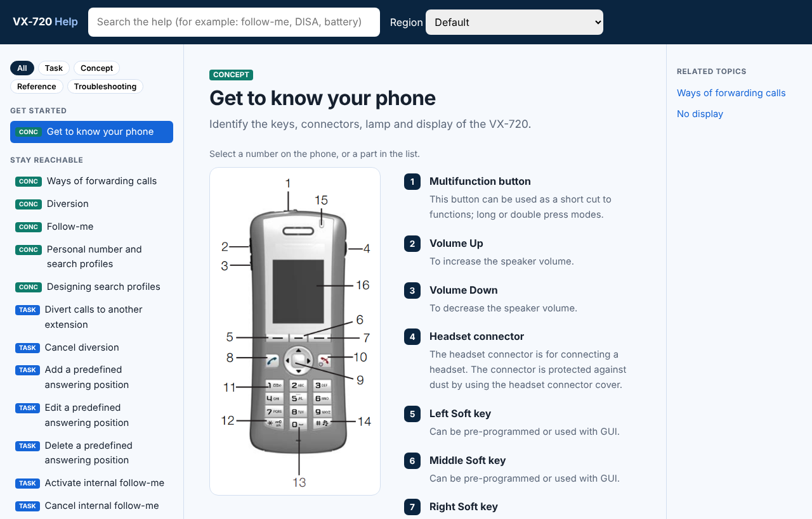
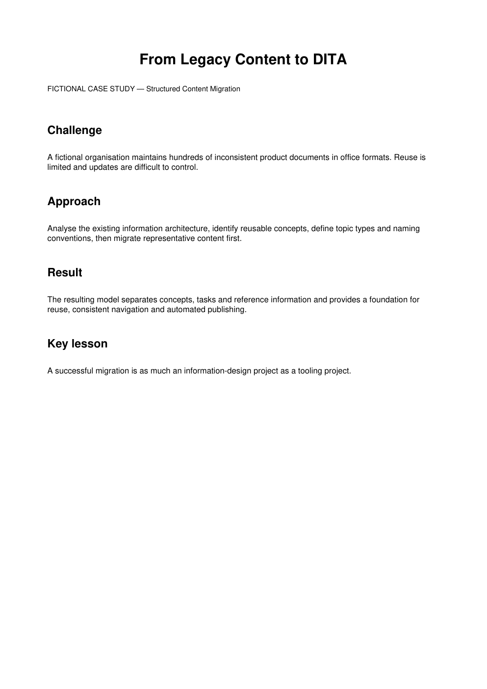

Real projects,
and the thinking behind them.
Real project samples, anonymized where needed, plus short examples of how I approach structure, style and migration.
Installation Guide
One installation, deployment and licensing guide for two audiences: end users and administrators. It covers requirements, workstation and command-line installation, network deployment, configuration and troubleshooting.

Challenge, role, approach, result
- Challenge: End users who install on their own and administrators who deploy at scale needed one reliable guide covering installation, licensing, configuration and troubleshooting.
- Role: Writer of the full guide, from scoping to the tagged release.
- Approach: I structured it by task (plan, install, license, configure, troubleshoot) and gathered known issues from developers, support engineers and license administrators. I tested every procedure on a clean machine and corrected step order, prerequisites and UI labels. I used numbered steps, standardized Note/Caution/Warning alerts, tables and code blocks, and reviewed changes with SMEs and peers through branch-per-change merge requests.
- Result: After several review cycles and a consistency check, the guide lets users install on their own and administrators deploy at scale.
VX-720 Cordless Phone User Guide
A complete user guide for a cordless phone used with a business communication system, covering its features and functions, installation and troubleshooting.

Challenge, role, approach, result
- Challenge: In 2008, I contributed to one of my early technical documentation projects for a major Swedish telecommunications company. The project involved documenting a cordless phone and developing a comprehensive user guide in a technical field that was relatively new to me.
- Role: I was responsible for writing the complete user guide, covering the phone’s features and functions, installation, and troubleshooting.
- Approach: I worked closely with subject matter experts (SMEs) to understand the product and verify technical information. I tested the phone’s features myself to gain first-hand experience and ensure that the instructions were accurate and practical. I also sought advice and feedback from more experienced technical writers.
- Result: I delivered a comprehensive, user-oriented guide covering the phone’s main functions, installation procedures, and troubleshooting. This project strengthened my technical-writing skills and gave me valuable experience in telecommunications documentation, while helping shape my approach to producing clear, reliable user documentation.
From PDF to task-based online help
A 2008 PDF user guide, restructured into modular topics and delivered as a modern online help.

Challenge, role, approach, result
- Challenge: A 2008 user guide for a cordless phone, written in FrameMaker for PDF output only, with no DITA methodology. Procedures, explanations, codes and error messages were mixed in long chapters.
- Role: Recently, I reworked the PDF presented in 02 (VX-720 Cordless Phone User Guide) to show how content can move to another format and style through structured methods: I defined the topic model and built the online help.
- Approach: I split chapters into concepts, tasks, references and troubleshooting topics. Region codes are centralized, system conditions stay visible, and gaps are flagged for SME validation.
- Result: A searchable, task-based online help covering call forwarding, an interactive phone introduction and troubleshooting. It shows how a linear PDF becomes modular, reusable content.
Usage Guide — Body & Face Treatment Device
A leaflet packaged with a consumer treatment device, so users can operate it independently.

Challenge, role, approach, result
- Challenge: Users had to master the treatment gestures, movement patterns and on-screen controls of a device with interchangeable body and face applicators, without a trainer.
- Role: Writer of the French source guide, from the on-site kick-off to the final corrections. Localization by the client was outside my scope.
- Approach: I learned the device by using it myself, confirmed technical details with the engineer, and refined the guide through successive client review cycles.
- Result: The guide was printed as a leaflet and included in the product packaging, so users can operate the device independently.
GitHub Review Procedure
An internal procedure that guides reviewers step by step through reviewing documentation changes in GitHub, submitting comments and suggestions, re-reviewing updated content and approving pull requests.

Challenge, role, approach, result
- Challenge: Reviewers across the team needed one consistent way to review documentation changes in GitHub, submit comments and suggestions, and approve pull requests.
- Role: I created and maintained this procedure for Elektrobit’s Technical Documentation team. It is an internal company document, developed specifically for Elektrobit.
- Approach: I wrote it as numbered, task-based steps that follow the reviewer from the pull request link in the GitHub email to approval. The steps cover review comments, proposed changes, re-review of updated content with “Show changes since your last review”, and the closing checklist in Jira.
- Result: A one-page, step-by-step guide that supports consistent documentation review workflows within the team.
System Administration Guide
A fictional guide for administrators configuring an enterprise platform. It shows task-based structure, prerequisites, clear procedures and expected results.

What this sample demonstrates
- Clear task titles and user goals
- Logical sequencing and prerequisites
- Concise instructions and expected results
- Consistent terminology
- Content designed for scanning rather than linear reading
From legacy content to DITA
A fictional case study on how I would analyze, model and migrate a large set of unstructured documents into reusable, topic-based content.

What this sample demonstrates
- Content analysis before tool selection
- Topic-based information architecture
- Reuse and governance considerations
- Migration strategy and phased implementation
- Documentation treated as a system, not a pile of files
Documentation Style Guide
A fictional internal guide that sets consistent terminology, style and procedure conventions for writers and engineers.

What this sample demonstrates
- Practical rules instead of abstract principles
- Terminology management
- Examples that writers can apply immediately
- Consistency across teams and documents
Much of my work is under NDA. So I show the method.
Samples are anonymized or recreated. In each case I show the audience, my role, the process and the outcome, so you can judge how I work.